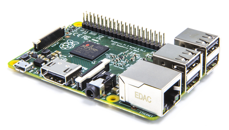

Bienvenue dans le monde du Raspberry Pi !

Proposé par la fondation britannique Raspberry Pi Foundation, le Raspberry Pi (ou RasPi) est un incroyable ordinateur low cost de la taille d'une carte de crédit qui se connecte sur votre téléviseur ou sur n'importe quel autre dispositif d'affichage disposant d'une entrée HDMI ou Vidéo (RCA).
Ci-dessous le Raspberry Pi 3 modèle B actuellement en vente aux alentours de 35 euros.
Présentation
Le Raspberry Pi est un nano-ordinateur monocarte à processeur ARM conçu par le créateur de jeux vidéo David Braben, dans le cadre de sa fondation Raspberry Pi.
Cet ordinateur, qui a la taille d'une carte de crédit, est destiné à encourager l'apprentissage de la programmation informatique2 ; il permet l'exécution de plusieurs variantes du système d'exploitation libre GNU/Linux et des logiciels compatibles. Il est fourni nu (carte mère seule, sans boîtier, alimentation, clavier, souris ni écran) dans l'objectif de diminuer les coûts et de permettre l'utilisation de matériel de récupération.
Son prix de vente était estimé à 25 $, soit 19,09 €, début mai 2011. Les premiers exemplaires ont été mis en vente le 29 février 2012 pour environ 25 €. En septembre 2016, plus de dix millions de Raspberry Pi ont été vendus. De multiples versions ont été développées, les dernières sont vendues un peu plus de 25 € pour le B+, à un peu plus de 30 € pour le Pi 2 (2015), un peu plus de 38 € pour le Pi 3 (2016) et 5$ pour le Raspberry Zero (2016)

En 2006, les premiers prototypes du Raspberry Pi sont développés sur des microcontrôleurs Atmel ATmega 644. Le schéma et le plan du circuit imprimé sont rendus publics. Cet ordinateur s'inspire du BBC Micro d'Acorn Computer (1981) et est destiné à encourager la jeunesse à la programmation. Le premier prototype ARM est intégré dans un boitier de la même taille qu'une clé USB avec un port USB d'un côté et un port HDMI de l'autre.
L'objectif de la fondation est alors de proposer deux versions, l'une à 25 $ US et une deuxième à 35 $ US. L'ouverture des commandes pour le modèle B (le plus cher) a eu lieu le 29 février 20129 et le 4 février 2013 pour le modèle A (le moins cher).
Démonstration
En créant le Raspberry Pi, la fondation voulait proposer un ordinateur pas cher et performant pour faciliter l'apprentissage de l'informatique au plus grand nombre et plus particulièrement aux plus jeunes. Aujourd'hui, force est de constater que ce petit appareil rencontre un grand succès dans différents domaines : jeux videos, serveur web, serveur multimédia, robotique, etc... Même de grosses entreprises comme Google s'y intéressent, notamment avec le projet Coder, un outil d'initiation au développement web.
Le Raspberry Pi peut même donner naissance à certains produits grand public comme par exemple avec le boitier KinouTV de la start-up française Kinoulink. On ne compte plus le nombre de projets qui voient le jour autour du Raspberry Pi, un simple petit tour sur les différents liens de ce site ou une simple recherche sur Internet vous permettra de voir le véritable potentiel de ce merveilleux petit ordinateur.
David Braben
David Braben est un programmeur britannique de jeux vidéo connu pour avoir conçu le jeu vidéo Elite ainsi que ses suites. Il est né à Basford en 1964. Il est également connu pour être le concepteur du Raspberry Pi, un ordinateur low-cost.
David Braben programma Elite aux côtés de Ian Bell alors qu'ils étudiaient à l'Université de Cambridge. Par la suite, il développa Zarch sur Acorn Archimedes (porté ensuite sur différentes plates-formes sous le nom Virus). Après Zarch, Braben fonda Frontier Developments, une société de développement de jeux vidéo dont le premier projet a été la création d'une suite pour Elite intitulée Frontier: Elite II. Actuellement, Braben est toujours le dirigeant de la compagnie.